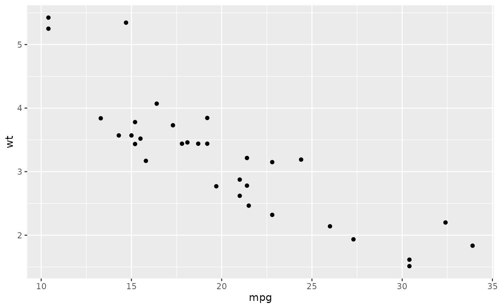

Sets the ggplot2 theme, and on request the conflicted preferences, to
match the standards used in the colleyRstats workflow.
Usage
colleyRstats_setup(
set_options = FALSE,
set_theme = TRUE,
base_size = 17,
set_conflicts = FALSE,
print_citation = TRUE,
verbose = TRUE
)Arguments
- set_options
![[Deprecated]](figures/lifecycle-deprecated.svg) Ignored.
colleyRstats no longer changes global
Ignored.
colleyRstats no longer changes global options(); passingTRUEwarns and does nothing. Default isFALSE.- set_theme
Logical. If
TRUE, sets the defaultggplot2theme tosee::theme_lucidwith custom modifications. Default isTRUE.- base_size
Base font size in points for the theme. Every text element is sized relative to it (see
colley_theme()), so a figure destined for a 3.33 in column and one destined for a slide can share the same theme and differ only in this number. Default 17 reproduces the sizes used before this argument existed.save_paper_figure()overrides it per figure to match the width actually being written.- set_conflicts
Logical. If
TRUE, registers this package'sconflictedpreferences, which favordplyrand other tidyverse packages. Default isFALSE. Registering them activatesconflicted, which takes overlibrary()for the rest of the session, so it is opt-in and belongs after yourlibrary()calls – see Details.- print_citation
Logical. If
TRUE, prints the citation information for this package. Default isTRUE.- verbose
Logical. If
TRUE, emit informational messages. Default isTRUE.
Details
set_conflicts changes what library() does, so call it
last. conflicted::conflict_prefer() does not merely record a
preference: it activates conflicted, which attaches a
.conflicts environment carrying its own library() and
require() shims. Every later attach in the session goes through them,
and they forward quietly and verbose into base::library()
as unevaluated symbols. A package whose .onAttach inspects the calling
library() frame – meta-packages that attach their own constituents do
this to decide whether to print a banner – then evaluates those symbols in a
frame that does not bind them, and the attach fails outright:
colleyRstats_setup(set_conflicts = TRUE)
library(easystats)
#> Error: .onAttach failed in attachNamespace() for 'easystats':
#> object 'quietly' not foundThe two mechanisms do not compose, and colleyRstats_setup() cannot
know whether more library() calls are coming. The preferences are
therefore opt-in, and the contract when you opt in is that
colleyRstats_setup() runs after everything else is attached:
library(colleyRstats)
library(easystats)
library(dplyr)
colleyRstats_setup(set_conflicts = TRUE) # lastThat is also the ordering in which the preferences are worth most:
conflicted resolves only those names that are ambiguous among the
packages attached at the time, so a call made before the rest of the script's
library() calls has less to work with.
Examples
# Runs everywhere, no extra packages, no session side effects
colleyRstats::colleyRstats_setup(
set_options = FALSE,
set_theme = FALSE,
set_conflicts = FALSE,
print_citation = FALSE,
verbose = FALSE
)
# \donttest{
# Full setup (requires suggested packages; changes session defaults)
if (requireNamespace("ggplot2", quietly = TRUE) &&
requireNamespace("see", quietly = TRUE)) {
local({
old_theme <- ggplot2::theme_get()
on.exit(ggplot2::theme_set(old_theme), add = TRUE)
colleyRstats::colleyRstats_setup(
set_options = FALSE,
set_conflicts = FALSE, # the default; see Details
print_citation = FALSE,
verbose = TRUE
)
ggplot2::ggplot(mtcars, ggplot2::aes(mpg, wt)) +
ggplot2::geom_point()
})
}
#> ggplot2 theme set to 'theme_lucid' with custom sizing (base_size = 17 pt).

# }